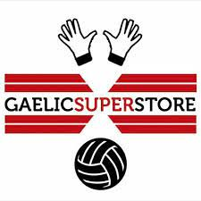
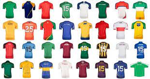
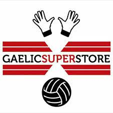

Gaelic Superstore is one of the leading brands when it comes to good quality and affordable GAA gloves Get Yours Here

GAA County jerseys for the upcoming 2022 All Ireland Championship.Buy Now
Gaelic Superstore is one of the leading brands when it comes to good quality and affordable GAA gloves Get Yours Here
